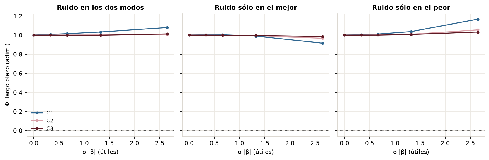
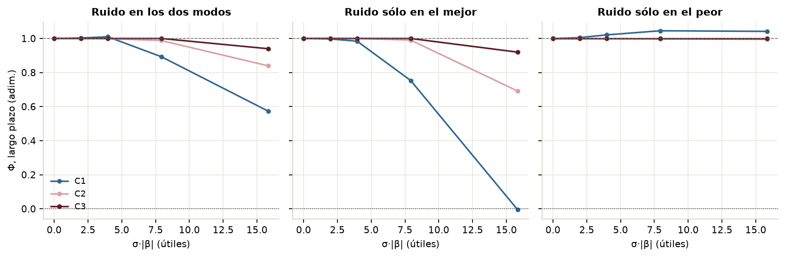
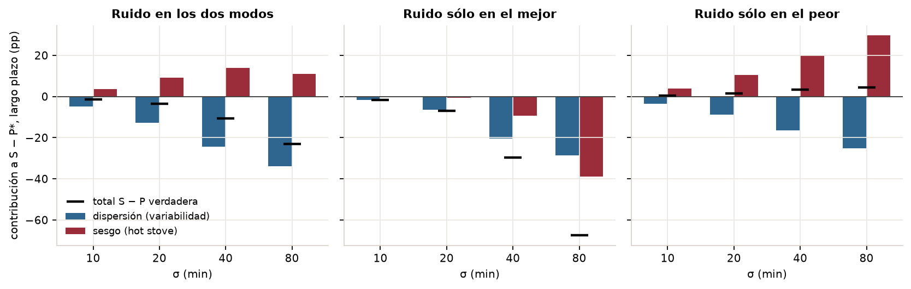
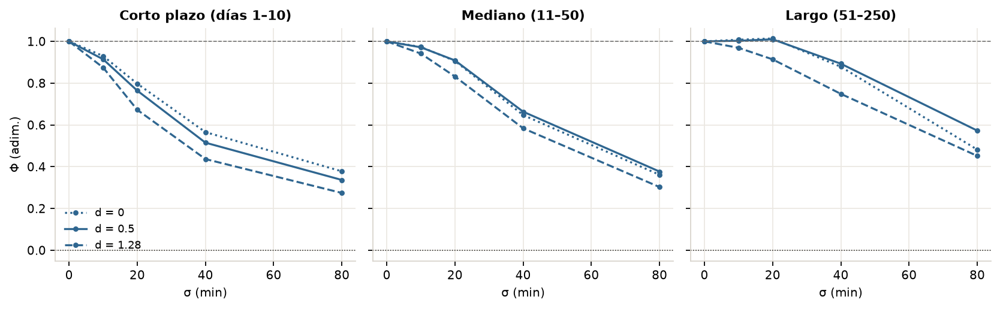

Qué le hace al aprendizaje día a día que los tiempos no sean los mismos todos los días — y por qué la respuesta depende de la escala del logit.
E2 pregunta qué le hace la variabilidad del tiempo de viaje a una persona que elige todos los días y sólo observa lo que eligió. Cuatro preguntas, con la respuesta corta al lado; el resto del informe las sostiene. Los números son los del simulador —sus , = 1— y la §4 explica qué tan lejos podrían estar.
P1. ¿Cuánta de la ventaja verdadera del modo mejor sobrevive al aprendizaje? En promedio, casi toda: con el caso de referencia (C1, ventaja 12,3 min) y ruido en los dos modos, cae de 1 a 0,88 aun con = 80 min. Esa respuesta tranquilizadora es justamente la que P2 desarma.
P2. ¿Importa en cuál de los dos modos está la variabilidad? Es lo único que importa de verdad, y es el resultado de E2. Con = 80 min sobre el modo mejor, baja a 0,49 y el 17,4 % de las personas queda invertido: elige sistemáticamente el modo peor. El mismo ruido sobre el modo peor da = 1,44, o sea mejora la decisión. El promedio de P1 es la mezcla de esos dos signos.
P3. ¿El daño viene de que la creencia se desplaza o de que se dispersa? De las dos, y cuál manda depende de dónde está el ruido. Con ruido en ambos modos domina la dispersión; con ruido sólo en el mejor domina el desplazamiento, que es el hot stove en su forma de manual.
P4. ¿Cuánto de esto depende de la calibración? El mecanismo no, el tamaño sí, y bastante. Si los de transporte fueran los que sugiere la literatura de elección repetida —6,0 veces mayores, §4— las mismas tres celdas darían 0,45, −0,61 y 1,11: con ruido en el modo mejor se vuelve negativo y los invertidos pasan a 80,8 %. Cada tabla trae esa columna.
Una persona elige cada día entre dos modos —el mejor y el peor de su celda— durante 250 días, 500 réplicas independientes, semilla 42. Cada día observa el tiempo realizado del modo que eligió y de ningún otro: ésa es la asimetría de información que hace interesante el problema. El tiempo realizado es el tiempo de referencia más un shock normal de desviación .
El diseño cruza cuatro ejes:
Y todo eso se corre dos veces, en las dos escalas del logit de la §4. Son 135 celdas por escala.
Tabla 1Los tres casos
| caso | estrato | km | auto (min) | metro (min) | mejor | (min) | P* (simulador) | P* (β × 6,0) |
|---|---|---|---|---|---|---|---|---|
| C1 | 3 | 9,8 | 20,1 | 28,6 | Metro | 12,3 | 0,6006 | 0,9198 |
| C2 | 2 | 3,5 | 8,0 | 20,2 | Auto | 33,4 | 0,7511 | 0,9987 |
| C3 | 1 | 1,1 | 3,0 | 21,1 | Auto | 52,7 | 0,8512 | 1,0000 |
Los tiempos y la ventaja no dependen de la escala; la probabilidad verdadera P* sí. Con los β de la literatura, C2 y C3 están saturados (P* ≥ 0,999): casi no queda margen para que el aprendizaje empeore nada medible. Por eso el caso de referencia de este informe es C1, el único con rango útil, y C2 y C3 entran como control.
El instance-based learning (IBL) dice que el tiempo que una persona cree que toma el modo es un promedio ponderado de los tiempos que efectivamente vivió en ese modo. Los días recientes pesan más:
donde es el tiempo realizado el día y
vale 1 si esa persona eligió ese día y 0 si no. Esa
indicatriz es todo el problema: los días en que no elegiste un modo no
entran, así que la creencia sobre un modo sólo se actualiza si lo usas. El
parámetro gradúa la memoria — = 0 promedia toda la historia,
grande mira casi sólo lo último. Ésta es la forma de Guevara, Tang y Gao
(2018), que la toman de Tang y Gao (2017); el código está en
ibl.py:30 y ibl.py:48.
Con esas creencias arma una utilidad percibida y elige con un logit binario:
es la utilidad del modo con su tiempo de referencia , tal como la calcula el simulador; es el coeficiente del tiempo de viaje, en útiles por minuto. es la ventaja percibida del modo mejor sobre el peor.
La ventaja verdadera conviene leerla en minutos, no en útiles, porque así no depende de la escala:
es cuántos minutos le gana el modo mejor al peor, ponderando cada componente del tiempo por su propio coeficiente. es la probabilidad que elegiría alguien que conoce los tiempos de referencia: el techo contra el cual se mide el aprendizaje.
El indicador central es qué fracción de esa ventaja sobrevive:
= 1 significa que el aprendizaje reprodujo la decisión informada; = 0, que la persona quedó tirando una moneda; < 0, que se invirtió — en promedio elige el modo peor. > 1 es posible y no es un error: quiere decir que el aprendizaje eligió el modo bueno más seguido que el informado.
Y para saber por qué cae, se parte en dos. Sea la media y la desviación de la ventaja percibida sobre personas y días. Lo que daría sólo la dispersión, con la media en su valor verdadero, es , y entonces
La dispersión es puro Jensen: es cóncava arriba
de ½, así que ruido simétrico alrededor de una ventaja positiva siempre acerca a ½.
Es negativa por construcción cuando . El sesgo
es lo que falta: cuánto se corrió la creencia media. Ahí vive el hot stove, y
—a diferencia de la dispersión— puede tener cualquier signo. El código está en
experimentos.py:270.
Todo lo que sigue está calculado con los del simulador. Esta sección explica qué son, por qué la literatura de elección repetida sugiere valores bastante mayores, y por qué eso se reporta como sensibilidad y no como corrección.
En un logit sólo se identifica el producto : multiplicar la escala
por un número y dividir los coeficientes por el mismo deja exactamente las
mismas probabilidades. Por eso el logit de transporte del simulador fija
= 1 —titirilquen_core/demand/choice.py:19
calcula a secas, sin ninguna escala— y son los los que la
absorben.
La consecuencia importa: no es una perilla disponible, ya está consumida. Los valen lo que valen porque, con = 1, reproducen una partición modal observada. (El del uso de suelo es otra cosa: ahí sí es un parámetro de escenario, porque fija cuánto pesa el ruido de localizarse frente a una accesibilidad que ya trae su propia escala.)
Guevara, Tang y Gao (2018) estiman un IBL con los datos de laboratorio de ruta de Ben-Elia y Shiftan (2010) —que es casi exactamente el experimento que estos informes simulan— y obtienen:
Tabla 2Guevara, Tang y Gao (2018), tabla 4, dataset completo
| parámetro | d | TIMEF | TIMES | LRISK | FRISKY | CWA |
|---|---|---|---|---|---|---|
| estimación | 1,28 | −0,198 | −0,086 | 0,864 | 0,405 | 5,71 |
| error estándar | 0,137 | 0,015 | 0,013 | 0,144 | 0,12 | 0,192 |
TIMEF multiplica el tiempo percibido de la ruta rápida (su ec. 15), no el real: es el análogo exacto de nuestro tiempo del IBL. TIMES es el de la ruta lenta — son dos coeficientes específicos de alternativa dentro del mismo modelo, no un rango. De acá sale también el d = 1,28 que usamos de referencia, que el paper subraya como estimado y no fijado.
Su coeficiente de tiempo es −0,198 útiles/min contra los −0,0331 del simulador:
Tomar ese número no es «elegir otra escala». Como ya está normalizado, equivale a afirmar que los de transporte del simulador son seis veces chicos — es decir, que la elección modal del modelo es mucho más ruidosa de lo que sería en la realidad. Y eso contradice su calibración, que es lo que fija esos .
Hay además una razón de fondo: la escala del logit no es transferible entre contextos de elección. El dato de Guevara viene de elegir entre dos rutas que difieren sólo en tiempo, en laboratorio, con información en pantalla. Elegir entre auto, metro, bici y caminata en una ciudad real es una decisión con mucha más heterogeneidad no observada — y esa heterogeneidad es precisamente lo que un chico representa. Su valor no es «el verdadero» que el simulador debería copiar.
Por eso los resultados van con los del simulador y las tablas traen una columna « × 6,0» como sensibilidad de calibración: dice cuánto crecería cada efecto si la elección modal fuera tan determinista como sugiere el laboratorio. Cuando un efecto se vea chico, esa columna contesta la pregunta obligada — ¿chico de verdad, o chico porque el modelo elige con demasiado ruido?
Las dos figuras siguientes son el mismo gráfico en las dos escalas. Ojo con el eje horizontal: está en útiles, así que la misma grilla de en minutos cubre un rango 6,0 veces más ancho en la segunda.


Tabla 3Φ del caso C1, d = 1,28, días 51–250
| σ (min) | ruido en los dos modos | ruido sólo en el mejor | ruido sólo en el peor | |||
|---|---|---|---|---|---|---|
| simulador | β × 6,0 | simulador | β × 6,0 | simulador | β × 6,0 | |
| 0 | 1,000 | 1,000 | 1,000 | 1,000 | 1,000 | 1,000 |
| 10 | 1,000 | 0,969 | 0,994 | 0,960 | 1,006 | 1,009 |
| 20 | 0,989 | 0,914 | 0,967 | 0,833 | 1,022 | 1,038 |
| 40 | 0,963 | 0,749 | 0,868 | 0,291 | 1,096 | 1,080 |
| 80 | 0,880 | 0,452 | 0,486 | −0,606 | 1,436 | 1,107 |
Cada par de columnas es la misma celda del diseño en las dos escalas. Con k = 1 (izquierda de cada par) casi nada se mueve de 1, y en «sólo en el peor» sube hasta 1,44. Con los β de la literatura (negrita) el experimento separa: el ruido sobre el modo mejor es devastador, el ruido sobre el peor es benigno, y el ruido en ambos queda en medio.
Leído en una línea: con ruido en los dos modos, C1 conserva 0,45 de su ventaja; con el mismo ruido puesto sólo en el modo mejor, se va a −0,61 —negativo— y con el ruido puesto sólo en el peor, sube a 1,11.
Tabla 4De dónde sale el daño — C1, d = 1,28, días 51–250
| ruido | σ (min) | k | total (pp) | dispersión (pp) | sesgo (pp) | ŝ (útiles) | invertidos (%) |
|---|---|---|---|---|---|---|---|
| en los dos modos | 40 | 1 | −0,4 | −1,2 | +0,9 | 0,81 | 2,0 |
| en los dos modos | 40 | 5,98 | −10,6 | −24,5 | +13,9 | 5,08 | 1,4 |
| en los dos modos | 80 | 1 | −1,2 | −3,2 | +2,0 | 1,64 | 9,6 |
| en los dos modos | 80 | 5,98 | −23,0 | −33,9 | +10,9 | 11,09 | 14,2 |
| sólo en el mejor | 40 | 1 | −1,3 | −0,6 | −0,7 | 0,55 | 0,2 |
| sólo en el mejor | 40 | 5,98 | −29,8 | −20,3 | −9,4 | 3,87 | 15,4 |
| sólo en el mejor | 80 | 1 | −5,2 | −2,0 | −3,1 | 1,14 | 17,4 |
| sólo en el mejor | 80 | 5,98 | −67,4 | −28,5 | −39,0 | 6,96 | 80,8 |
| sólo en el peor | 40 | 1 | +1,0 | −0,8 | +1,7 | 0,60 | 0,0 |
| sólo en el peor | 40 | 5,98 | +3,4 | −16,6 | +19,9 | 3,08 | 0,0 |
| sólo en el peor | 80 | 1 | +4,4 | −2,3 | +6,7 | 1,24 | 1,0 |
| sólo en el peor | 80 | 5,98 | +4,5 | −25,3 | +29,8 | 5,37 | 0,0 |
«Total» es S − P*, la ec. (7). La dispersión es negativa siempre, como exige Jensen. El sesgo cambia de signo según dónde esté el ruido, y es el que manda en los extremos: con ruido sólo en el mejor aporta la mayor parte del daño, con ruido sólo en el peor compensa de sobra a la dispersión. «Invertidos» es el porcentaje de personas cuya cuota promedio del modo mejor quedó bajo ½: gente que aprendió al revés.


Tabla 5Control de saturación — los tres casos con σ = 80 min, d = 1,28, días 51–250
| caso | A (min) | P* con k = 5,98 | ruido en los dos modos | ruido sólo en el mejor | ruido sólo en el peor | |||
|---|---|---|---|---|---|---|---|---|
| simulador | β × 6,0 | simulador | β × 6,0 | simulador | β × 6,0 | |||
| C1 | 12,3 | 0,9198 | 0,880 | 0,452 | 0,486 | −0,606 | 1,436 | 1,107 |
| C2 | 33,4 | 0,9987 | 0,884 | 0,785 | 0,768 | 0,339 | 1,106 | 0,996 |
| C3 | 52,7 | 1,0000 | 0,921 | 0,934 | 0,866 | 0,805 | 1,045 | 1,000 |
C2 y C3 están saturados: con P* ≥ 0,998 el denominador de Φ ya vale casi ½ y no queda techo, así que su Φ ≈ 1 en «sólo en el peor» es un límite aritmético, no un hallazgo. En C1 sí hay margen en las dos escalas, y ahí el signo se da vuelta de verdad: 1,44 con k = 1 contra 1,11 con la escala de Guevara. Por eso C1 es el caso de referencia y éstos son control.
El mecanismo es el que la literatura llama hot stove: si una experiencia sale mal, dejas de elegir esa opción, y al dejar de elegirla dejas de recibir la información que corregiría la creencia. La ec. (2) lo hace explícito — apaga los días en que no elegiste—, así que una mala racha se congela en la memoria en vez de promediarse.
Lo que E2 agrega es que ese mecanismo no tiene un signo propio: te hace abandonar lo que sea variable. Si lo variable es el modo bueno, es una trampa ( = 0,49, sesgo −3,1). Si lo variable es el modo malo, es una ayuda: te hace abandonar lo que igual te convenía abandonar ( = 1,44, sesgo +6,7).
Esto importa para política pública más de lo que parece. La lectura ingenua de «reducir la variabilidad del transporte público» supone que menos varianza siempre es mejor. E2 dice que el signo depende de si el modo que se vuelve confiable es el que la persona debería elegir. Reducir la variabilidad del modo que ya es peor puede empujar gente hacia él.
La tabla 4 separa dos cosas que suelen confundirse. La dispersión es mecánica y siempre daña: es cóncava arriba de ½, así que cualquier ruido en la creencia acerca la elección a la moneda. No necesita ninguna historia psicológica. El sesgo sí: es el desplazamiento sistemático de la creencia media, y es donde se ve el hot stove.
En el caso de referencia, con ruido sólo en el mejor, el sesgo aporta −3,1 de los −5,2 totales: manda el sesgo, no la dispersión. Con ruido en ambos modos la cuenta se da vuelta y domina la dispersión. Cualquier resumen del tipo «el daño es tal cosa» sin decir dónde está el ruido es falso en la mitad de las celdas.
El logit trae su propio ruido: el término de Gumbel tiene desviación ≈ 1,81 útiles. Con los del simulador, = 80 min valen 2,65 útiles: el ruido del experimento y el del logit son del mismo orden. Una elección que ya es bastante aleatoria por construcción tiene poco que perder, y eso acota cuánto puede verse el efecto.
Si los fueran 6,0 veces mayores —lo que sugiere la literatura de elección repetida, §4— esa razón pasaría a 8,7 y el daño sería otro: los invertidos de la peor celda pasan de 17,4 % a 80,8 %. El mecanismo es el mismo; lo que cambia es cuánto margen hay para que se note.
La lectura honesta es ésa: en la medida en que el del simulador esté absorbiendo heterogeneidad no observada —y algo de eso hace—, E2 subestima el efecto. No al revés.
Todo con los del simulador; entre paréntesis, qué daría si fueran 6,0 veces mayores (§4).
salida/experimentos-guevara.json) pero sin informe; E3 y E4 no
tienen corrida.papers/2018 Guevara Tang Gao TRB.pdf: la tabla 2 de arriba es su
tabla 4, dataset completo.papers/1-s2.0-S1755534525000156-main.pdf.cd sandbox/ibl-dia-a-dia
uv sync --extra dev --reinstall-package titirilquen-core # el núcleo del repo, no uno cacheado
uv run --extra dev pytest # las fórmulas
uv run python experimentos.py # ~5 min → salida/experimentos.json
uv run python experimentos.py --guevara # ~5 min → salida/experimentos-guevara.json
uv run python figuras_experimentos.py
uv run python figuras_experimentos.py --guevara
uv run python informe_e2.py
node ../../tools/renderiza_ecuaciones.js